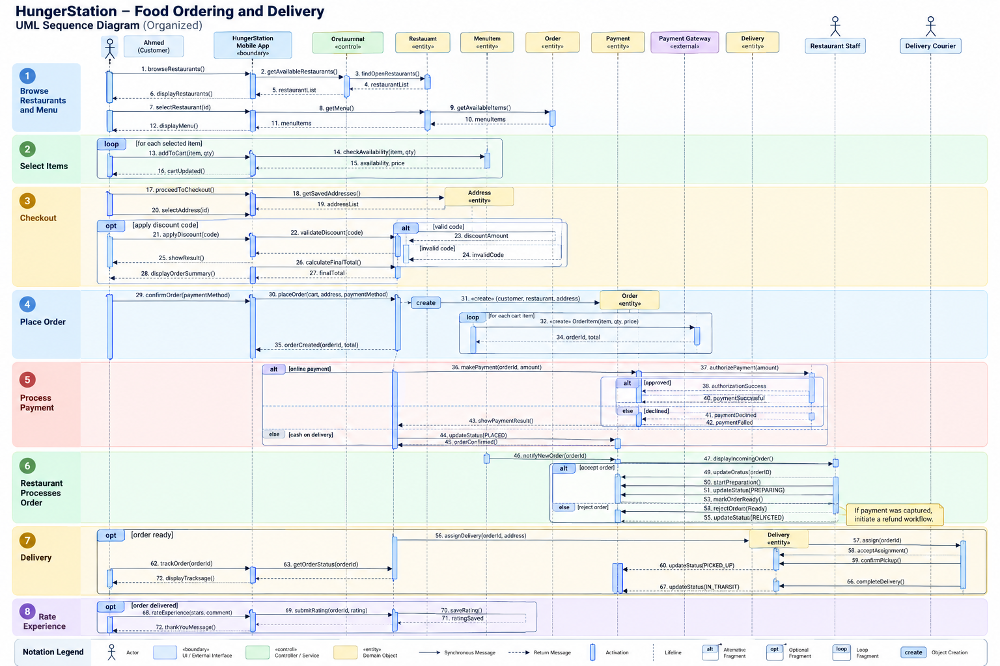
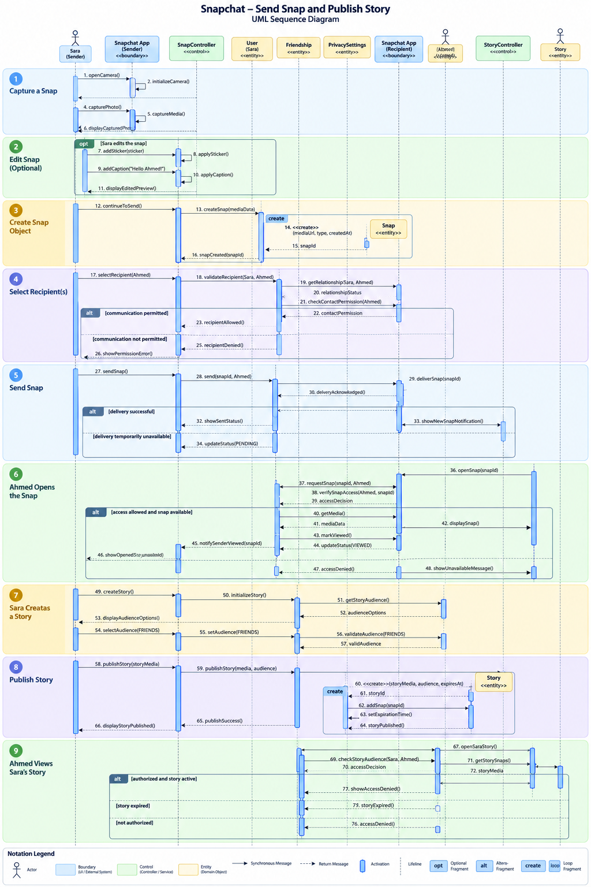

Real-World Sequence Diagram Case Studies
Follow how objects collaborate over time in HungerStation and Snapchat. Read the scenario first, then trace messages, decisions, activations, and object creation.
Identify actors, boundary/control/entity lifelines, synchronous messages, dashed replies, execution specifications, and UML combined fragments (alt, opt, loop). Explain how object interactions implement a use-case scenario.
How to read these diagrams
Time flows from top to bottom. Participants are arranged horizontally; messages connect lifelines. Solid arrows represent calls; dashed arrows represent replies. Thin rectangles indicate execution/activation. alt separates mutually exclusive guarded paths, opt marks conditional behavior, and loop indicates repetition.
HungerStation — Food Ordering and Delivery
Scenario: Ahmed chooses a restaurant, adds two burgers to his cart, selects a delivery address, optionally applies a discount, places an order, pays, tracks the courier, and rates the completed delivery.
Order with its OrderItem records.
On a small screen, scroll horizontally inside the diagram. Open the full-resolution version to zoom into individual messages.

What to observe
- Actor → boundary → control: Ahmed interacts with the app, which delegates application logic to an order controller.
- Object creation: The order and order-line objects begin their lifelines when created; each order line stores the selected item and quantity.
- Guarded paths: Payment approved/declined and restaurant accepted/rejected are alternative outcomes, not consecutive steps.
- Optional/repeated behavior: Discount application is optional; an order can contain multiple items.
- State transitions: An accepted order progresses through preparation, pickup, transit and delivery.
OrderItem contain the purchased quantity rather than modifying the quantity of the restaurant's MenuItem? What happens after a declined payment?Snapchat — Send Snap and Publish Story
Scenario: Sara captures a photo, optionally edits it, selects Ahmed as the recipient, sends the Snap, and later publishes a Story. Ahmed opens the Snap and may view the Story if audience and expiration rules permit.

On a small screen, scroll horizontally inside the diagram. Open the full-resolution version to zoom into individual messages.

What to observe
- Separate actors: Sara sends content while Ahmed receives and views it.
- Optional editing: The
optfragment runs only if Sara edits the Snap. - Recipient authorization: Communication and Story visibility depend on permission checks.
- Delivery versus viewing: A delivered Snap is not necessarily viewed. Each recipient needs an independent delivery/view record.
- Story lifecycle: The Story's availability depends on its expiration time; viewing it does not itself cause expiration.
SnapDelivery record required for each recipient?Same UML language, different responsibilities
| Concept | HungerStation | Snapchat |
|---|---|---|
| Primary interaction | Place and fulfill an order | Send and view a Snap |
| Central entity | Order | Snap |
| Supporting entity | OrderItem | SnapDelivery |
| Alternative flow | Payment approval or rejection | Permission granted or denied |
| Optional flow | Apply discount | Edit Snap |
| Key responsibility | Preserve order and payment consistency | Preserve per-recipient state and privacy |
Start with a specific scenario. Identify collaborating objects and their responsibilities. Order messages chronologically, then add only the UML fragments needed to express meaningful alternatives, optional behavior, and repetition.